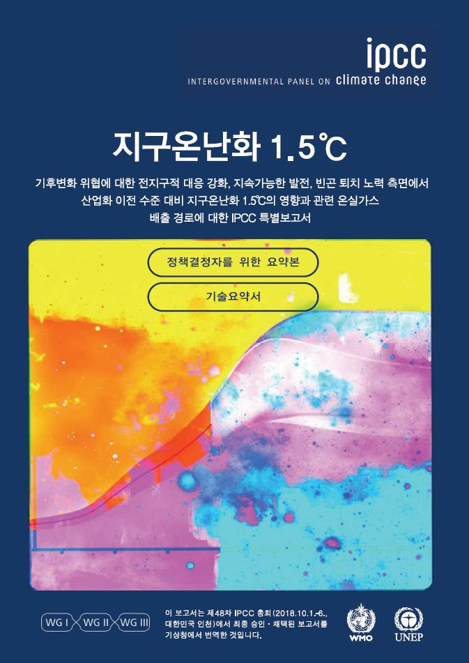

WHAT IS NET ZERO?
대기 중 온실가스 농도 증가를 막기 위해 인간 활동에 의한 배출량을 감소시키고, 흡수량을 증대하여
순배출량이 ‘0’이 되는 것을 탄소중립 혹은 ‘넷제로(Net-Zero)’라고 말합니다.
우리나라는 2050년을 목표로 탄소중립을 이루기 위해 노력하고 있습니다.
배출량 감소 ↓ 화석연료 연소, 수송 등 인간 활동에 의한 인위적 배출량을 0에 가깝게 감소
흡수량 증가 ↑ 숲 복원, 블루카본 기술, 탄소제거기술 활용 등으로 흡수
탄소중립 추진배경
국제사회는 인간이 배출한 온실가스에 따른 지구온난화에 대한 심각성을 인식하고,
기후 위기에 대응하기 위해 노력하고 있습니다.
기후변화협약(1992년)을 맺고 교토의정서(1997년)와 파리협정(2015년) 채택을 통해
지구 평균기온 상승 억제를 논의해왔습니다.
1992년 유엔기후변화협약 UNFCCC
- - UN주관의 기후변화에 대한 선언적 국제연합 기본협약 (강제사항 없음)
- - 가입 당사국들은 각각 자국의 실정에 알맞은 온실가스 배출량 감축을 위한 국가 정책 수립·시행
- - 온실가스 배출량 및 흡수량에 대한 국가통계와 정책이행에 관한 보고서 제출
- - UN주관의 기후변화에 대한 선언적 국제연합 기본협약 (강제사항 없음)
- - 가입 당사국들은 각각 자국의 실정에 알맞은 온실가스 배출량 감축을 위한 국가 정책 수립·시행
- - 온실가스 배출량 및 흡수량에 대한 국가통계와 정책이행에 관한 보고서 제출
- - UN주관의 기후변화에 대한 선언적 국제연합 기본협약 (강제사항 없음)
- - 가입 당사국들은 각각 자국의 실정에 알맞은 온실가스 배출량 감축을 위한 국가 정책 수립·시행
- - 온실가스 배출량 및 흡수량에 대한 국가통계와 정책이행에 관한 보고서 제출
- - UN주관의 기후변화에 대한 선언적 국제연합 기본협약 (강제사항 없음)
- - 가입 당사국들은 각각 자국의 실정에 알맞은 온실가스 배출량 감축을 위한 국가 정책 수립·시행
- - 온실가스 배출량 및 흡수량에 대한 국가통계와 정책이행에 관한 보고서 제출
1997년 교토의정서
2015년 파리협정
2018년 IPCC 1.5°C 특별보고서 채택
왜 지구 온도상승을 1.5℃ 이내로 억제하는 목표를 설정했나요?
| 2°C 상승 | - 해수면 상승 |
| - 생태계 파괴 | |
| - 이상 기후 | |
| - 건강 악화, 인구 감소 |
| 1.5°C 상승 | - 평균 온도 상승 |
| - 호우 및 가뭄 피해 증가 | |
| - 해양 · 어획량 피해 | |
| - 생태계 절반 이상 상실 |
산업화 이후 현재까지 기후변화가 지속되었음에도 그 영향이 급격히 나타나지 않은 이유는
지구시스템을 구성하는 다양한 요소가 기후변화 영향을 완충하였기 때문입니다.
하지만 기후변화로 인해 기존 지구시스템의 상호작용 방식이 급변하여 기후 위기가 시작됐고 ,
이에 기후저지선 (1.5℃)을 설정하게 됩니다. 기후저지선은 인류 생존 및 생태계 보전을 담보하기 위해
넘지 말아야 할 최후의 한계선을 뜻합니다 .
기후저지선은 2009년 코펜하겐 당사국총회 당시 일부 과학자와 기후변화 피해가 집중되는
군소도서 국가를 중심으로 2℃보다 더 낮은 기후저지선 설정이 필요하다는 주장이 제기되었으나
최종적으로 2℃ 기후저지선이 채택되었습니다. 하지만 다양한 과학적 근거를 통해
지구 평균기온이 2℃ 상승할 경우 ‘돌이킬 수 없는 ’기후변화가 나타날 수 있다는 사실이 받아들어져
2015년 파리협정 체결시 1.5℃가 기준선이 되었습니다.
탄소중립은 왜 2050년이 목표인가요?
|  | ||
|---|---|---|
파리협정 |
지구온난화 1.5°C 특별보고서 |
2050 탄소중립 선언 |
| 2015년 12월 파리협정에서는 산업혁명 이전 (1850~1900년 평균) 대비 2°C보다 훨씬 아래로 유지하고, 나아가 1.5°C 아래로 억제하기 위해 노력해야한다는 목표를 설정하였습니다 |
IPCC는 2018년 발표한 1.5도 특별보고서를 통해 전 지구적으로 지구 평균온도 상승을 1.5°C 이내로 억제하기 위해서는 전 지구적으로 2030년까지 온실가스 배출량을 2010년 대비 45% 이상 감축해야 하고, 2050년에는 탄소중립을 달성해야 한다고 제시했습니다, 이에 국제사회에서는 2050년 탄소배출 중립 목표를 이루기 위해 많은 노력을 기울이고 있습니다 |
우리나라는 국제사회의 노력에 동참하고 건강한 미래를 만들기 위해 2020년 10월 28일 '2050년 탄소중립 선언' 및 12월 10일 '2050 탄소중립 비전'을 선포하였습니다. |